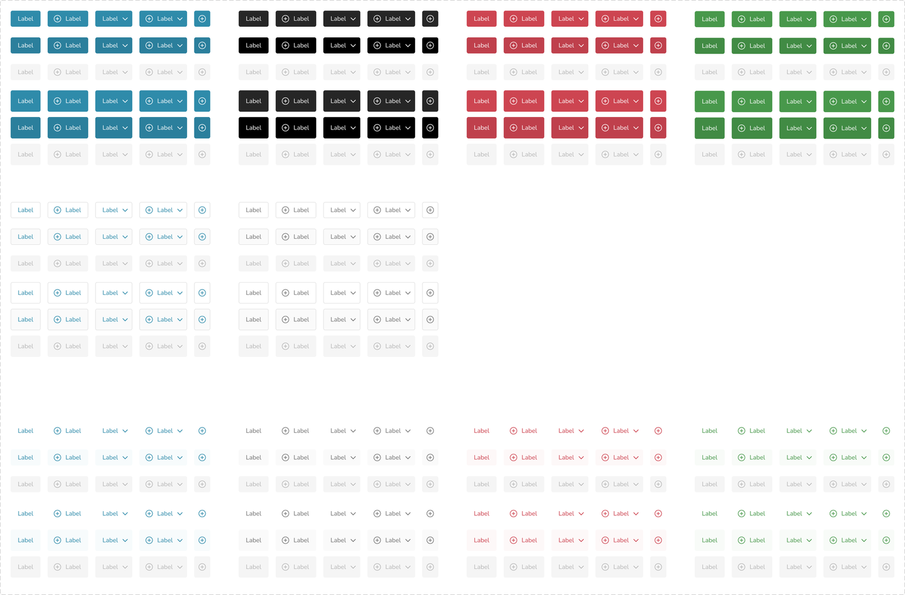
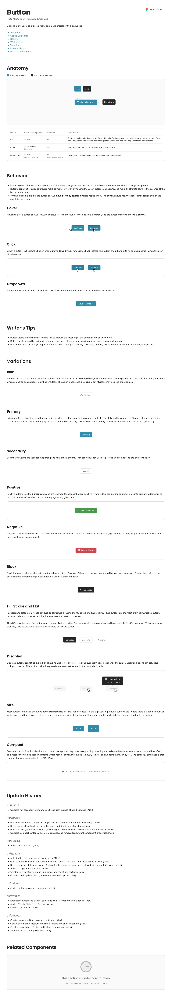

Overview
One platform, many products, no shared language
Ninety is a business operating system — goals, meetings, scorecards, org charts, and more, each effectively its own tool. As part of a small but mighty design team, I helped build Terra, Ninety’s first unified design system, from the ground up.
Before Terra, each tool on the platform had its own look and feel, making the user experience inconsistent and hard to scale. Our goal was to bring cohesion, clarity, and efficiency to every corner of the product — and to do it in a way that integrated seamlessly with the parent brand. That wasn’t just a visual facelift; it was living up to the company’s “everyone, working as one” motto.
The Problem
Visual debt was slowing everyone down
The lack of a shared system showed up as three compounding problems:
My Role
Co-leading the system: tokens, components, alignment
Terra was a team effort — 6 product designers, 1 product manager, and 2 engineering leads. I co-led the initiative, with my contributions focused on three areas:
Approach
Atomic design, anchored to the parent brand
We structured Terra using atomic design methodology — atoms, molecules, and organisms — so every complex pattern decomposed into reusable, independently documented parts. Tokens fed atoms, atoms composed into molecules, and the whole hierarchy stayed traceable: change a token, and you could reason about everything it touched.
Just as important was what the system anchored to. Terra was designed to integrate seamlessly with the larger parent brand identity, so the product didn’t drift into its own visual dialect — the design system and the brand system stayed one conversation.
Token Architecture
Semantic tokens that scale across themes and platforms
The token layer was the foundation everything else depended on. I structured it semantically — tokens named for their role (surface, emphasis, danger) rather than their value — which meant theming, dark-mode readiness, and responsive adjustments became configuration problems instead of redesign problems.
The discipline paid off most visibly in component states. Every interactive component — buttons, toggles, inputs, chips — drew its hover, focus, disabled, and error treatments from the same semantic ramps, so state behavior felt identical across the whole platform.

Components & Documentation
Documentation that answers the next question
A component without documentation is just a picture. For each Terra component, we wrote documentation structured around how people actually use a system: anatomy (what the parts are and which are required), behavior (hover, click, and interaction rules down to the 1px press effect), writer’s tips (how to label it in plain language), variations (when to reach for primary vs. secondary vs. destructive), and update history (so consumers could trust the component was maintained).
Each page named a point-of-contact owner and linked directly to the Figma source — small governance details that kept the documentation alive instead of decorative.

Impact
What Terra changed
Terra also became the foundation my later AI work at Ninety was built on — when we designed Maz, the AI agent, its interaction patterns extended Terra components rather than inventing new ones, which is exactly the test a design system should pass.
Reflection
What building Terra taught me
A design system is a social contract, not a Figma file
The hardest work on Terra wasn’t drawing components — it was cross-functional alignment. Six designers with six existing mental models, plus engineering leads with legitimate constraints, all had to agree on shared patterns and then keep honoring them under deadline pressure. The system succeeded because we treated adoption as a design problem: documentation written for the reader’s next question, named owners, and a changelog that proved the system was alive.
Terra is also why I treat design systems leadership as core to AI product design. Consistent, token-driven components are what make it possible to introduce new paradigms — like AI-generated content and agentic interactions — without the product fracturing. The systems thinking I built here carries directly into how I design AI patterns at Constant Contact today.